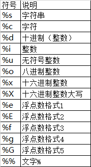

前言
老师怕学生考试挂科，额外安排了一节课讲考试范围和题型（泄题(｀・ω・´)）。就喜欢这样的老师！
权当巩固一下咯，专门记一些我没有记住的知识点。
Python简介
Python，读作[‘paɪθɑn],汉语是蟒蛇，Python的logo是两条缠绕在一起的蟒蛇.
Python语言是由荷兰程序员Guido van Rossum，独立开发完成初版的。之所以选中Python作为该编程语言的名字，是因为他是一个叫Monty Python喜剧团体的爱好者，其本意并不是想选条蟒蛇。
Python语言的特点
Emma 这些基础特点到是忘了不少。
简单易学、明确优雅、开发速度快 跨平台、可移植、可扩展、交互式、解释型、面向对象的动态语言,丰富的库,开源
- 跨平台：Python支持Windows、Linux和MAC os等主流操作系统。
- 可移植：代码通常不需要多少改动就能移植到别的平台上使用。
- 可扩展：Python语言本身由C语言编写而成的，你完全可以在Python中嵌入C，从而提高代码的运行速度和效率。你也可以使用C语言重写Python的任何模块，从根本上改写Python，PyPy就是这么干的。
- 交互式：Python提供很好的人机交互界面，比如IDLE和IPython。可以从终端输入执行代码并获得结果，互动的测试和调试代码片断。
- 解释型：Python语言在执行过程中由解释器逐行分析，逐行运行并输出结果。
- 面向对象：Python语言具备所有的面向对象特性和功能，支持基于类的程序开发。
- 动态语言：在运行时可以改变其结构。例如新的函数、对象、甚至代码可以被引进，已有的函数可以被删除或是其他结构上的变化。动态语言非常具有活力。
“内置电池”，大量的标准库和第三方库
Python为我们提供了非常完善的基础库，覆盖了系统、网络、文件、GUI、数据库、文本处理等方方面面，这些是随同解释器被默认安装的，各平台通用，你无需安装第三方支持就可以完成大多数工作，这一特点被形象地称作“内置电池（batteries included）”。
有一句话叫做“不要重复造轮子”。不要过分迷信自己的代码能力，要知道，能作为标准库被Python内置，必然在可靠性和算法效率上达到了目前最高水平，能被广泛使用的第三方库，必然也是经受了大量的应用考验。那些造轮子的事情，就交给世界最顶尖的那一波程序员去干吧，没有极致的思维和数学能力，想创造好用的轮子是很难的。
社区活跃，贡献者多，互帮互助
国外有好多，在国内，好像没有比较成熟，因此学好英语，去和世界范围的程序员交流吧！
开源语言，发展动力巨大
Python是基于C语言编写的，并且使用GPL开源协议，你可以免费获取它的源代码，进行学习、研究甚至改进。众人拾柴火焰高，有更多的人参与Python的开发，促使它更好的发展，被更多的应用，形成良性循环。Python为什么会越来越火就是因为它的开放性，自由性，聚起了人气，形成了社区，有很多人在其中做贡献，用的人越来越多，自然就提高了市场占有率，企业、公司、厂家就不得不使用Python，提供的Python程序员岗位就越来越多，这就是开源的力量。
Python包管理工具
Python有两个著名的包管理工具easy_install和pip。在Python2.7的安装包中，easy_install是默认安装的，而pip需要我们手动安装。随着Python版本的提高，easy_install已经逐渐被淘汰，但是一些比较老的第三方库，在现在仍然只能通过easy_install进行安装。目前，pip已经成为主流的安装工具，自Python2 >=2.7.9或者Python3.4以后默认都安装有pip。
就如同Python有2、2.7、3、3.6一样，pip也有pip、pip2、pip3之分。pip是从属于Python的，对应的pip负责给对应的Python安装第三方模块。我们不要关心pip后面跟的数字，核心的问题是这个pip命令对应的是哪个Python解释器，想要为哪个Python解释器安装第三方库，就要调用它名下对应的pip。
如何确定哪个pip是哪个Python的呢？
cmd环境中，输入pip -V(大写V)：
pip的使用
- 普通安装
再次强调，使用pip前请务必确认其所对应的Python解释器必须是你想要的那个！
以安装pillow模块为例。输入pip install pillow。
指定版本安装
安装特定版本的package，通过使用==, >=, <=, >, <来指定一个版本号。
pip install ‘Markdown<2.0’
pip install ‘Markdown>2.0,<2.0.3卸载已安装的库
pip uninstall pillow列出已经安装的库
pip list将已经安装的库列表保存到文本文件中
pip freeze > requirements.txt
这个功能非常常用、好用！经常被用作项目环境依赖文件。
- 根据依赖文件批量安装库
pip install -r requirements.txt
使用上面的txt文件，批量安装第三方库。
Python的virtualenv 虚拟环境
这部分不考，详细内容见https://www.liujiangblog.com/course/python/6
Python基础
缩进
python的灵魂就是使用缩进来表示代码块，不需要使用大括号 {} 。
缩进的空格数是可变的，但是同一个代码块的语句必须包含相同的缩进空格数。
注释
Python中单行注释以 # 开头
多行注释可以用多个 # 号，还有 ''' 和 """
Python自带的集成开发环境
IDLE
Python变量的命名规则
变量名可以包括字母、数字、下划线，但不能以数字开头。区分大小写。
Python pass 语句
Python pass 是空语句，是为了保持程序结构的完整性。
pass 不做任何事情，一般用做占位语句。
为什么说Python采用的是基于值的内存管理模式？
Python中的变量并不直接存储值，而是存储了值的内存地址或者引用，假如为不同变量赋值为相同值，这个值在内存中只有一份，多个变量指向同一块内存地址。
Gossip(闲聊)脚本语言与编程语言的区别
脚本语言与编程语言的区别有： 1、脚本语言不需要编译器，省去编译过程；而编程语言需要编译器。 2、脚本语言是动态的，可以实时更改代码；而编程语言不可以实时更改代码。 3、脚本语言易学，但缺乏系统性；编程语言较为成熟。脚本语言和编程语言比较
（1）脚本语言不需要编译器因而省去了编译的过程减少了开发的时间，而编程语言需要编译所以时间更长点
（2）脚本语言是一种动态语言，也就是说可以实时的更改代码，而不需要将程序停止下来，这是一种高级特性。而Java等编程语言是静态的语言，一旦编译完成并且运行就不能更改代码，除非将程序停止下来
（3）脚本语言非常容易学习，但是不够全面缺乏系统性而且语法较为散漫。而高级编程语言虽然相对难学，但是规则强可以编程出简洁美观的代码，并且可读性也相对较强。
（4）一般来说脚本语言通用性较差，但是可以通过专门的应用来调整。
（5）随着技术的发展，其实脚本语言变得越来越强，和编程语言的界限也比较模糊，比如Python，可以将它视为编程语言了，因为它很强大。
转载自https://www.php.cn/faq/416712.html
is 与 == 的区别
“is”作为判断地址是否相等，即判断两个变量是否指向同一内存地址
“==”判断两个变量的值是否相等
同样的，”is not”和”!=”遵循同样的逻辑
数据类型
可变数据类型
列表(list)
列表的系列函数：①append():元素的追加，在列表的末尾添加新的值 列表名.append(新增的值)
②insert(下标，值)：在指定下标插入指定的值 列表名.insert(下标，值)
③count(值)：求指定元素在列表中出现的次数 列表名.count(值)
④pop(下标)：从列表中根据下标移除指定位置的值 列表名.pop(下标)
（pop删除元素，是将元素从列表移除，但依然存在于内存，如需使用，使用变量接收）
⑤remove(值)：从列表中根据值来删除掉指定的元素
（如果列表中存在重复的元素，删除的时候，仅仅删除第一个）
⑥sort()：排序，从小到大 .
若需要实现从大到小，需要添加关键字参数reverse=True 列表名.sort(reverse=True)
⑦sorted()：临时排序 sorted(列表名)
⑧reverse()：翻转 列表名.reverse()
⑨extend()：列表的扩展/列表的拼接 列表名.extend(列表)
⑩index(值)：获取列表中指定元素的下标 列表名.index(值)
字典(dict)
字典的系列函数：①dict():映射到另一个字典：字典名 = dict(字典名)
通过序列创建字典：字典名 = dict(序列) #序列位置只能传入序列，因字典数据格式是键值对 ，所以序列中的每一个元素中应该包含两个值 eg. [(1,2),3,4]
②fromkeys():多个key共用一个值 dict.fromkeys(key的序列，值)
③keys()：获取字典中所有的key，以形式列表返回 字典名.keys()
④values()：获取字典中所有的value，以实行列表返回 字典名.values()
⑤get(key, default)：根据key，获取指定的value 字典名.get(key, 提示信息)
⑥pop(key，default)：根据key，删除这个key的键值对 字典名.pop(key, 提示信息)
⑦clear()：清空字典中所有的键值对，只保留空字典 字典名.clear()
⑧del：删除字典 del 字典名
⑨update()：字典的更新/字典的拼接 字典名.update(字典名)
字典新增数据：字典名[key] = value
（key存在，修改字典中key原有的value key不存在，在字典中新增一个键值对）
不可变数据类型
不可变数据类型的函数都不会改变数据的值，所以需要添加一个值来接受
数字
整型：int 浮点型：float bool:True、False 复数：complex字符串
- 字符串系列函数： ①replace()：替换字符串中的内容为新的字符串内容 字符串.replace(旧字符，新字符，替换次数) #替换次数默认为全部替换 ②upper()：字符串中所有的字符全部转换为大写 ③lower():字符串中所有的字符串全部转换为小写 ④len()：求字符串的长度 len(字符串) ⑤split(切割字符)：将字符串按照自定的字符进行切割，返回一个列表 eg. a = ‘abcde’ b = a.split(‘c’) (结果)b=[‘ab’,’def’] ⑥capitalize()：大写字符串的第一个字符 ⑦title()：大写字符串中每一个单词的首字母 ⑧index()：返回字符串中指定元素的下标，如果有重复的元素，返回第一个元素的下标元组
符号：() 关键字：tuple 创建 只有一个值的元组的时候，要在元素后面加一个逗号：元组名 = （1，） 元组函数： ①tuple()：创建元素，实现其他数据类型转换为元组 ②count()：统计元组中指定元素出现的次数 ③index()：求出元组内指定元素的下标集合
符号：{} 关键字：set 创建空集合时用小括号：set() 特点：无需不重复 举例： set1 = {1,2,3} 或 set2 = set(‘hello’) set2的输出结果：{‘o’,‘e’，‘h’，‘l} #此结果不唯一，满足无需不重复特点即可切片
特点
只能用于序列(可以用下标获取元素的)：字符串，列表，元组
特点：起始下标不能比截止下标大用法
序列名[起始下标：截止下标]
特例：
①序列名[:]:截取序列中全部内容
②序列名[起始下标：]：截取从起始下标开始的全部内容
③序列名[:截止下标]：截取从0开始到截止下标前一位的所有内容
④序列名[:负数]：截取倒数除了负数个数的全部内容
eg.list[:-3]:截取0到倒数第四个的全部内容(倒数第三个不用)列表的复制
①列表1 = 列表2：
列表1和列表2共用同一块内存地址，修改其中任意一个列表的值，另一个列表也会更改内容
②列表1 = 列表2[:]
运算符和表达式
算数运算符
‘+’‘-’‘\*’‘/’‘%’‘//’(整除，求商)‘\*\*’(求幂，2的三次方：2**3)赋值运算符
‘=’‘+=’‘-=’‘*=’‘/=’关系运算符(返回一个bool值)
‘>’‘<’‘==’‘>=’‘<=’‘!=’逻辑运算符
‘and’‘or’‘not’ 详解
转载自https://blog.csdn.net/maoxuexue/article/details/105899512
and
格式：操作数1 and 操作数2
如果操作数1的值为True(无论是什么类型 True、1、-1、’ ‘), 那么运算结果就等于操作数2。
In [8]: 3 and 2
Out[8]: 2
In [9]: 3 and 0
Out[9]: 0
In [10]: 3 and False
Out[10]: False
In [11]: 3 and 'hello'
Out[11]: 'hello'如果操作数1的值为False(无论是什么类型 False、0、[]、’’), 那么运算结果就等于操作数1。
In [12]: 0 and 3
Out[12]: 0
In [13]: '' and 3
Out[13]: ''
In [14]: False and 3
Out[14]: False
In [15]: [] and 3
Out[15]: []or（跟and相反）
格式：操作数1 or 操作数2
如果操作数1的值为True(无论是什么类型 True 1 -1 ‘hello’)，那么运算结果就等于操作数1。
如果操作数1的值为False(无论是什么类型 False 0 [] ‘’)，那么运算结果就等于操作数2。
逻辑+and/or的短路原则
举例的话，就是 “表达式1 and 表达式2“，假如表达式1的值为true，则会继续执行表达式2，最终整个表达式的值也就取决于表达式2的值；假如表达式1的值为false，则会短路，不再执行表达式2，直接取表达式1的值，也就是false。
and换成or刚好反过来，假如表达式1的值为true，则会短路，不再执行表达式2，直接取表达式1的值，也就是true；假如表达式1的值为false，则会继续执行表达式2，最终整个表达式的值也就取决于表达式2的值。
- 三元运算符
>>> 3 if 0 else 2
2
>>> 3 if 1 else 2
3成员运算符
‘in’‘not in’身份运算符
‘is’‘is not’命令
a.循环语句：for / while 语句 b.判断语句：if / if elif 语句 c.顺序语句
条件判断和循环
条件判断
计算机之所以能做很多自动化的任务，因为它可以自己做条件判断。if <条件判断1>:
<执行1>
elif <条件判断2>:
<执行2>
elif <条件判断3>:
<执行3>
else:
<执行4>
#---------------------------------------------#
#if判断条件还可以简写，比如写：
if x:
print('True')
# 只要x是非零数值、非空字符串、非空list等，就判断为True，否则为False。注意不要忘记冒号:
循环
为了让计算机能计算成千上万次的重复运算，我们就需要循环语句。while 循环
Python 中 while 语句的一般形式：while 判断条件(condition)：
执行语句(statements)……菜鸟教程执行流程图
菜鸟教程的GIF图片
同样需要注意冒号和缩进。另外，在 Python 中没有 do..while 循环。
while 循环使用 else 语句
在 while … else 在条件语句为 false 时执行 else 的语句块。
语法格式如下：
while <expr>:
<statement(s)>
else:
<additional_statement(s)>实例
#循环输出数字，并判断大小：
count = 0
while count < 5:
print (count, " 小于 5")
count = count + 1
else:
print (count, " 大于或等于 5")
##输出结果
0 小于 5
1 小于 5
2 小于 5
3 小于 5
4 小于 5
5 大于或等于 5for 语句
Python for循环可以遍历任何序列的项目，如一个列表或者一个字符串。for循环的一般格式如下：
for <variable> in <sequence>:
<statements>
else:
<statements>菜鸟教程执行流程图
for循环经常与range() 函数结合使用
菜鸟教程链接：range函数
#可以使用range()函数来创建一个列表：
>>>list(range(5))
[0, 1, 2, 3, 4]break与continue
break 语句可以跳出 for 和 while 的循环体。如果你从 for 或 while 循环中终止，任何对应的循环 else 块将不执行。continue 语句被用来告诉 Python 跳过当前循环块中的剩余语句，然后继续进行下一轮循环。
字符串与编码
字符串也是一种数据类型，但它涉及到编码问题，Python3中默认使用的是Unicode编码。关于计算机编码的问题我已经解决了，在[计算机编码与进制](https://self-ferry.github.io/2020/12/09/%E8%AE%A1%E7%AE%97%E6%9C%BA%E7%BC%96%E7%A0%81%E4%B8%8E%E8%BF%9B%E5%88%B6/)一文中。由于Python源代码也是一个文本文件，所以，当你的源代码中包含中文的时候，在保存源代码时，就需要务必指定保存为UTF-8编码。当Python解释器读取源代码时，为了让它按UTF-8编码读取，我们通常在文件开头写上这两行：
#!/usr/bin/env python3
# -*- coding: utf-8 -*- 字符串的格式化输出
%的用法
1、整数的输出 %o —— oct 八进制 %d —— dec 十进制 %x —— hex 十六进制 2、浮点数输出 （1）格式化输出 %±m.nf +号可以省略，表示右对齐。-号表示左对齐。m表示占多少位，n表示保留小数点后几位.>>> print("数字%6.6f" % a)
数字6.900000
>>> print("数字%6.2f" % a)
数字 6.90%f ——保留小数点后面六位有效数字
%e ——保留小数点后面六位有效数字，指数形式输出
%g ——在保证六位有效数字的前提下，使用小数方式，否则使用科学计数法
%.3g，保留3位有效数字，使用小数或科学计数法
字符串格式代码
常用转义字符
format的用法
相对基本格式化输出采用‘%’的方法，format()功能更强大，该函数把字符串当成一个模板，通过传入的参数进行格式化，并且使用大括号‘{}’作为特殊字符代替‘%’- 位置匹配
(1)不带编号，即“{}”
(2)带数字编号，可调换顺序，即“{1}”、“{2}”
(3)带关键字，即“{a}”、“{tom}”
(4)通过下标或key匹配参数
>>> print('{} {}'.format('hello','world')) # 不带字段
hello world
>>> print('{0} {1}'.format('hello','world')) # 带数字编号
hello world
>>> print('{0} {1} {0}'.format('hello','world')) # 打乱顺序
hello world hello
>>> print('{1} {1} {0}'.format('hello','world'))
world world hello
>>> print('{a} {tom} {a}'.format(tom='hello',a='world')) # 带关键字
world hello world
>>> coord = (3, 5)
>>> 'X: {0[0]}; Y: {0[1]}'.format(coord) #通过下标或key
'X: 3; Y: 5'- 格式转换
‘b’ - 二进制。将数字以2为基数进行输出。
‘c’ - 字符。在打印之前将整数转换成对应的Unicode字符串。
‘d’ - 十进制整数。将数字以10为基数进行输出。
‘o’ - 八进制。将数字以8为基数进行输出。
‘x’ - 十六进制。将数字以16为基数进行输出，9以上的位数用小写字母。
‘e’ - 幂符号。用科学计数法打印数字。用’e’表示幂。
‘g’ - 一般格式。将数值以fixed-point格式输出。当数值特别大的时候，用幂形式打印。
‘n’ - 数字。当值为整数时和’d’相同，值为浮点数时和’g’相同。不同的是它会根据区域设置插入数字分隔符。
‘%’ - 百分数。将数值乘以100然后以fixed-point(‘f’)格式打印，值后面会有一个百分号。
>>> print('{0:b}'.format(3))
11
>>> print('{:c}'.format(20))
>>> print('{:d}'.format(20))
20
>>> print('{:o}'.format(20))
24
>>> print('{:x}'.format(20))
14
>>> print('{:e}'.format(20))
2.000000e+01
>>> print('{:g}'.format(20.1))
20.1
>>> print('{:f}'.format(20))
20.000000
>>> print('{:n}'.format(20))
20
>>> print('{:%}'.format(20))
2000.000000%- 进阶用法
进制转换 (2进制、8进制、10进制、16进制)>>> # format also supports binary numbers >>> "int: {0:d}; hex: {0:x}; oct: {0:o}; bin: {0:b}".format(42) 'int: 42; hex: 2a; oct: 52; bin: 101010' >>> # with 0x, 0o, or 0b as prefix: >>> "int: {0:d}; hex: {0:#x}; oct: {0:#o}; bin: {0:#b}".format(42) # 在前面加“#”，则带进制前缀 'int: 42; hex: 0x2a; oct: 0o52; bin: 0b101010' - 左中右对齐及位数补全
(1)< （默认）左对齐、> 右对齐、^ 中间对齐、= （只用于数字）在小数点后进行补齐
(2)取位数“{:4s}”、”{:.2f}”等>>> print('{} and {}'.format('hello','world')) # 默认左对齐 hello and world >>> print('{:10s} and {:>10s}'.format('hello','world')) # 取10位左对齐，取10位右对齐 hello and world >>> print('{:^10s} and {:^10s}'.format('hello','world')) # 取10位中间对齐 hello and world >>> print('{} is {:.2f}'.format(1.123,1.123)) # 取2位小数 1.123 is 1.12 >>> print('{0} is {0:>10.2f}'.format(1.123)) # 取2位小数，右对齐，取10位 1.123 is 1.12 >>> '{:<30}'.format('left aligned') # 左对齐 'left aligned ' >>> '{:>30}'.format('right aligned') # 右对齐 ' right aligned' >>> '{:^30}'.format('centered') # 中间对齐 ' centered ' >>> '{:*^30}'.format('centered') # 使用“*”填充 '***********centered***********' >>>'{:0=30}'.format(11) # 还有“=”只能应用于数字，这种方法可用“>”代替 '000000000000000000000000000011' - 正负符号显示
>>> '{:+f}; {:+f}'.format(3.14, -3.14) # 总是显示符号 '+3.140000; -3.140000' >>> '{: f}; {: f}'.format(3.14, -3.14) # 若是+数，则在前面留空格 ' 3.140000; -3.140000' >>> '{:-f}; {:-f}'.format(3.14, -3.14) # -数时显示-，与'{:f}; {:f}'一致 '3.140000; -3.140000' - 百分数%
>>> points = 19 >>> total = 22 >>> 'Correct answers: {:.2%}'.format(points/total) 'Correct answers: 86.36%' - 时间
>>> import datetime >>> d = datetime.datetime(2010, 7, 4, 12, 15, 58) >>> '{:%Y-%m-%d %H:%M:%S}'.format(d) '2010-07-04 12:15:58' - 逗号”,”分隔金钱，以千进位
>>> '{:,}'.format(1234567890) '1,234,567,890'
函数
函数文档__doc__()调用
参数
参数定义的顺序必须是：必选参数、默认参数、可变参数、命名关键字参数和关键字参数。a. 形参：形式参数，没有实际作用
①必备参数：也加位置参数，用户调用函数时，必须要传入的参数
② 缺省参数：用户调用函数时，可以不用传入的参数 eg.def a(a1=1,a2=2) 定义默认参数要牢记一点：默认参数必须指向不变对象！ https://www.liaoxuefeng.com/wiki/1016959663602400/1017261630425888中有详细介绍。
③关键字参数：用户调用函数时，必须通过“形参名=实参名/值” 格式传入的参数 eg. def a(a1,a2) a(a1=1,a2=2) →函数调用
定义命名的关键字参数在没有可变参数的情况下不要忘了写分隔符*，否则定义的将是位置参数。
④不定长参数
*args：接收任意多个单值，组成一个元组
**kwargs：接收任意多个键值对，组成一个字典
def person(name, age, **kw): print('name:', name, 'age:', age, 'other:', kw)
b. 实参：实际参数，真正参与函数的运算
函数变量的作用域
Python的全局变量与局部变量。如果在函数内部试图去修改全局变量，Python会使用屏蔽（Shadowing）方式“保护”全局变量：一旦函数内部去修改全局变量，Python就会在函数内部自动创建一个名字一模一样的局部变量，这样修改的结果只会修改到局部变量，而不会影响到全局变量。
如果你有必要在函数中修改这个全局，那么你可以使用global关键字来打到目的
实例
>>> c = 5
>>> def h():
global c
c = 666
print(c)
>>> h()
666
>>> c
666返回值
当不写return语句的时候，默认Python会认为函数会return None的。 所以说python 所有的函数都有返回值。>>> def h():
print("666")
>>> print(h())
666
None
>>> h()
666
#-------------------------------------------------------#
#当返回多个值时，默认会使用元组
>>> def f():
return 1, 2, 'nb'
>>> f()
(1, 2, 'nb')
>>> type(f())
<class 'tuple'>
>>> 内嵌函数
Python的函数定义是可以嵌套的，允许在函数内部创建另一个函数，这种函数叫做内嵌函数或者内部函数。不举例了
注意函数的定义域
函数1里定义的函数2只能在函数1里使用。(废话嘛这不)
闭包(closure)
闭包是函数式编程的一个重要的语法结构，函数式编程是一种编程范式，著名的函数式编程语言就是LISP语言。不同编程函数实现闭包的方式不同，Python中的闭包从变现形式上定义为：如果在一个内部函数里，对在外部作用域（但不是全局作用域）的变量进行引用，内部函数就被认为是闭包（closure）。
实例
>>> def funx(x):
def funy(y):
return x * y
return funy
>>> l = funx(6)
>>> l(6)
36
##也可以这样写
>>> funx(6)(6)
36通过上面的例子理解闭包的概念：如果在一个内部函数里（funy就是这个内部函数）对外部作用域（但不全是在全局作用域）的变量进行引用（x就是被引用的变量，x在外部作用域funx函数里面，但不在全局作用域里），则为这个内部函数就是一个闭包。
把一个变量变成了一个函数
使用闭包函数需要注意的是：因为闭包的概念就是有内部函数而来的，所以你也不能在外部函数以外的地方对内部函数进行调用。（很显然呀）
还有一个问题
>>> def funx():
x=5
def funy():
x *= x
return x
return funy
>>> funx()()
Traceback (most recent call last):
File "<pyshell#29>", line 1, in <module>
funx()()
File "<pyshell#28>", line 4, in funy
x *= x
UnboundLocalError: local variable 'x' referenced before assignment这个报错原因跟全局变量的那个一样，Python认为在内部函数的x是局部变量的时候，外部函数的x就被屏蔽了起来，所以在右边根本就找不到局部变量x的值，因此报错。
在Python3之前只能间接的通过容器类型来存放，因为容器类型不是放在栈里，所以不会被“屏蔽”。字符串、列表、元组，这些啥都可以往里放的就是容器类型。可以把代码改成：
>>> def funx():
x = [5]
def funy():
x[0] *= x[0]
return x
return funy
>>> funx()()
[25]
>>> type(_) # "_"代表上一条语句的结果
<class 'list'>
# 把“x[0] = x ”了到Python3里有一个关键字nonlocal可以使用，使用方法跟global一样
>>> def funx():
x = 5
def funy():
nonlocal x
x *= x
return x
return funy
>>> funx()()
25转载自Python中关键字global与nonlocal的区别
第一，两者的功能不同。global关键字修饰变量后标识该变量是全局变量，对该变量进行修改就是修改全局变量，而nonlocal关键字修饰变量后标识该变量是上一级函数中的局部变量，如果上一级函数中不存在该局部变量，nonlocal位置会发生错误（最上层的函数使用nonlocal修饰变量必定会报错）。
第二，两者使用的范围不同。global关键字可以用在任何地方，包括最上层函数中和嵌套函数中，即使之前未定义该变量，global修饰后也可以直接使用，而nonlocal关键字只能用于嵌套函数中，并且外层函数中定义了相应的局部变量，否则会发生错误（见第一）
匿名函数
Python之父想删除的一个函数。。。。。
匿名函数：
lambda 形参1,形参2：执行语句
>>> g = lambda x, y:x*y
>>> g(6, 6)
36介绍两个BIF：filter()和map()
Python中的BIF就是Built-in Functions,即内置函数(装x呀)
filter()
第一个内建函数就是过滤器
看看python中的注释
>>> help(filter)
Help on class filter in module builtins:
class filter(object)
| filter(function or None, iterable) --> filter object
|
| Return an iterator yielding those items of iterable for which function(item)
| is true. If function is None, return the items that are true.
|
| Methods defined here:
|
| __getattribute__(self, name, /)
| Return getattr(self, name).
|
| __iter__(self, /)
| Implement iter(self).
|
| __next__(self, /)
| Implement next(self).
|
| __reduce__(...)
| Return state information for pickling.
|
| ----------------------------------------------------------------------
| Static methods defined here:
|
| __new__(*args, **kwargs) from builtins.type
| Create and return a new object. See help(type) for accurate signature.
实例
>>> s = [1,0,False,True]
>>> t = filter(None, s)
>>> t
<filter object at 0x000001DC49317070>
>>> list(t)
[1, True]结合lambda函数写一个奇数过滤器
>>> list(filter(lambda x: x % 2, range(10)))
[1, 3, 5, 7, 9]map()
map在这里不是地图的意思，在编程领域里，map一般做“映射”来解释。
map()这个内置函数也有两个参数，仍然是一个函数和一个可迭代序列，将序列的每一个元素作为函数的参数进行运算加工，知道可迭代序列每个元素都加工完毕，返回所有加工后的元素构成的新序列。实例
>>> s = [1,0,False,True]
>>> t = map(None, s)
>>> t
<map object at 0x000001DC49317610>
>>> list(t)
Traceback (most recent call last):
File "<pyshell#68>", line 1, in <module>
list(t)
TypeError: 'NoneType' object is not callable
#空类型不能调用
>>> map(lambda x: x * 2, range(10))
<map object at 0x000001DC49317A60>
>>> list(_)
[0, 2, 4, 6, 8, 10, 12, 14, 16, 18]递归
什么是递归？递归,就是在运行的过程中调用自己。
先举个实例>>> def re():
re()
>>> re()
Traceback (most recent call last):
File "<pyshell#3>", line 1, in <module>
re()
File "<pyshell#2>", line 2, in re
re()
File "<pyshell#2>", line 2, in re
re()
File "<pyshell#2>", line 2, in re
re()
[Previous line repeated 1022 more times]
RecursionError: maximum recursion depth exceeded这就是初学者玩递归最容易出现的错误。从理论上讲这个程序将永远执行下去直至耗尽所有内存资源。不过Python3出于“善意的保护”，对递归的深度默认限制是100层，所以你的代码才会停下来。不过如果你写网络爬虫等工具，可能会爬得很深，那你也可以自己设置递归的深度限制。方法如下：
>>> import sys
>>> sys.setrecursionlimit(1000000)#将递归限制设置为100万层写一个求阶乘的函数
# 非递归版本 （迭代）
>>> def re(n):
result = n
for i in range(1, n):
result *= i
return result
>>> re(6)
720
#递归版本
>>> def recursion(n):
if n ==1:
return 1
else:
return n* recursion(n - 1)
>>> recursion(6)
720有一句话“普通程序员用迭代，天才程序员用递归”。但并不是把所有的迭代都用递归代替就是“天才程序员”，恰恰相反。因为递归的实现是函数调用自己，每次函数的调用都需要进行压栈、弹栈、保存和恢复寄存器的栈操作，所以会非常消耗时间和空间的。不过，存在即合理，没必要讨论那个好。递归用在妙处，自然代码简洁、精炼。
斐波那契数列
斐波那契数列是意大利数学家列昂纳多·斐波那契发明的。
问题：如果兔子在出生两个月后就拥有繁衍能力，这对兔子每个月能生一对小兔子来，假设所有兔子都不会死亡，那么一年后会有多少兔子？
| 月数 | 1 | 2 | 3 | 4 | 5 | 6 | 7 | 8 | 9 | 10 | 11 | 12 |
|---|---|---|---|---|---|---|---|---|---|---|---|---|
| 兔子 | 1 | 1 | 2 | 3 | 5 | 8 | 12 | 21 | 34 | 55 | 89 | 144 |
用数学函数来定义
#不会md文件的数学语法（我是笨比）
1 当n=1时
F(n)={ 1 当n=2时 }
F(n-1)+F(n-2) 当n>2时假设需要求20个月后有多少只兔子
迭代实现
>>> def f(n):
a = b = c = 1
if n < 1:
print("输入有误")
return -1
while (n - 2) > 0:
c = a + b
a = b
b = c
n -= 1
return c
>>> f(20)
6765
>>> f(12)
144递归实现
>>> def recursion(n):
if n<1:
print("输入有误")
return -1
if n ==1 or n == 2:
return 1
else:
return recursion(n-1) + recursion(n-2)
>>> recursion(20)
6765
>>> recursion(12)
144当你把20个月调成35个月时
>>> f(35) #毫秒级就完成运算了
9227465
>>> recursion(35) #大概有3秒才完成运算
9227465为了体现递归正确的使用优势。
来看一看汉诺塔难题。
规则是有三根铁针，其中一根针上从下到上穿好了由大到小的n个盘子，这些金片一次只能移动一片，不管在那根针上小盘必须在大盘上面，要把所有盘子从一根针上移动到另一根针上。
我们先来分析思路
对于游戏的玩法，可以简单分解为三个步骤:
1.首先将前n-1个盘子从X移动到Y上，确保大盘在小盘下。
2.将最底下的第n个盘子移动在Z上
3.将Y上的n-1个盘子移动到Z上
想要实现步骤1和3，都必须要借助另一个针，接着分析问题
问题一：步骤1将X针上的1~n-1个盘子需要借助Z移动到Y上；
问题二：步骤3将Y针上的n-1个盘子需要借助X移动到Z上。
而解决这两个问题的方法跟刚才的思路一样都可分成三个步骤。
问题一（将X针上的1~n-1个盘子借助Z移动到Y上）拆解：
（1）首先将前n-2个盘子从X移动到Z上，确保大盘在小盘下。
（2）将最底下的第n-1个盘子移动在Y上
（3）将Y上的n-2个盘子移动到Y上
问题二（将Y针上的n-1个盘子借助X移动到Z上）拆解：
（1）首先将前n-2个盘子从Y移动到X上，确保大盘在小盘下。
（2）将最底下的第n-1个盘子移动在Z上
（3）将X上的n-2个盘子移动到Y上
没错拆解过程刚好满足递归算法的定义，因此可以使用递归来解决。
参考代码
>>> def hanoi(n, x,y,z):
if n==1:
print(x,'-->',z)
else:
hanoi(n-1,x,z,y)
print(x,'-->',z)
hanoi(n-1,y,x,z)
>>> n = 3
>>> hanoi(n,'X','Y','Z')
X --> Z
X --> Y
Z --> Y
X --> Z
Y --> X
Y --> Z
X --> Z模块/包以及文件处理
模块/包
模块： .py文件 包： python package模块：模块是函数和类的集合；在python中一个文件既是一个模块。
包：包是模块的集合；将多个模块放在一个文件夹内，就形成了一个包。
文件处理
a. 操作模式：r、w、a、bb.读
①read():读取文件中的所有内容
②readline():读取单行内容
③readlines():以行的形式读取所有内容，返回一个包含了每一行的序列
c.写
①write(写入内容)：将指定内容写入文件中
②writelines(序列)：将序列中的每一元素，作为单独的行，按照行的形式写入
d.其他
①tell():返回光标当前所在的位置
②seek(步长，起始位置):将光标移动到指定的位置
(0,0)表示移动光标到文章最开头的地方
Python面向对象
魔法方法
Python异常处理
Python网络编程
TCP
UDP
Python进程与线程
Python正则表达式
Python爬虫
URL
原理
收集自以下
https://www.liujiangblog.com/course/python/
https://zhuanlan.zhihu.com/p/149247533
https://www.liaoxuefeng.com/wiki/1016959663602400
https://www.cnblogs.com/fat39/p/7159881.html

- 本文链接：https://self-ferry.github.io/2020/12/18/python-%E6%9C%9F%E6%9C%AB%E5%A4%8D%E4%B9%A0/
- 版权声明：本博客所有文章除特别声明外，均默认采用 许可协议。
若没有本文 Issue，您可以使用 Comment 模版新建。
GitHub Issues